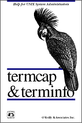

General Information
Applicable to most character-cell/remote-graphics terminals
(skip to links)
A Web essay by Tom Van Vleck gives us some perspective on
how serial computer terminals have been used and improved since
the 1960s.
For glimpses of how computer hobbyists of the early 1980's used
character-cell video terminals with the home computers of the day,
you can visit a library and look up these
articles ftom BYTE magazine.
Information on setting up a Unix or Linux system for use with terminals
or terminals emulations is
here, whereas, information on terminal emulations themselves is
here.
When you are trying to use any
dumb terminal
(or even a
smart terminal)
with a remote host, it is
helpful to remember that there are two sets of parameters in play:
- settings within the local terminal that determine exactly how it
will behave
- information that the remote host computer has about
what type of terminal it is talking to
The two sets of parameters interact: the host computer can
sometimes discover how the local terminal is set, and the computer will
likely adjust what control characters it sends according to its guess
of how the video terminal may behave.
If you need beginner's help on how to login to a Unix system using a
terminal, you can start by reading
this introductory video-terminal tutorial for Unix by Anthony Lawrence.
You can also read
introductory Unix materials from here at the University of Tennessee,
or you can read an
equivalent introduction to Linux.
A few common
terminal-related questions
are answered in the Boston University Unix User's Guide.
You can read this
Introduction to Telnet, describing
the Internet's original remote-terminal protocol.
And it may be helpful to look at the
"telnet" section of the
TCP/IP Frequently-Asked Questions document.
(And there is the
"Mini-FAQ" on TCP/IP applications. On the other hand,
if you just want some fun, you can sing
The Telnet Song or just look at
the currently lighted face of Earth in ASCII.
Dmoz.org lists some
Unix-shell-access providers,
and the the Noise-Level Zero conferencing system
a web-page telnet interface.)
To view the text parts of web pages using a character-cell terminal, you
can use the
Lynx web browser.
But, if you have some idea of using a character-cell terminal to connect
to a remote computer running Microsoft's Windows NT, you'd better
read this first, and then have a look at
this.
(return to Video Terminal index page)
User Issues
Programmer/Administrative Issues
- Commentary on ANSI terminal controls, especially in DEC products.
- Summary of ANSI X3.64 Standard (basis for ISO 6429) control codes.
- A sample page from the ANSI X3.64 document. (GIF)
- ECMA-48 Standard (derived from X3.64) (PDF)
- ANSI X3.64/ECMA-48 Escape Sequence Concordance (Ben Harris)
(or by FTP)
- How a program can tell what type of terminal it is talking to.
- General discussion of control sequences.
- How "private" control functions of a terminal may be used.
- Discussing how to translate codes between terminal types.
- What to think about when inventing terminal emulation on a PC.
- MIT's parser for DEC VT420 control sequences (C source code/zip)
- Some discussion about the GNU "screen" software package
(or read a
description of its functions).
- A very simplified discussion of RS-232-C serial wiring
- The experts on
DECUServe had
a discussion of serial data communication (and other things).
- Information on USB, the "Universal Serial Bus"
- USB Frequently Asked Questions (PDF, via Hewlett-Packard)
- On printing to a printer attached to the terminal.
(Rasmussen Software has a
FAQ page which mentions passthrough printing...link works in 2009) ::::.
- When the terminal sends and receives entire forms in block mode.
- News about NAPLPS, a remote graphics protocol (used by Prodigy).
- Technical specification for NAPLPS protocol
(index)
- AlphaWindow character-cell windowing protocol.
- AT&T developed the
"layers" terminal-control protocol, as used in the
AT&T 5620 Terminal.
- A Guide to Telnet (Anzio.com)
- Character sets:
ASCII, EBCDIC, Unicode, line-drawing, accented, & code pages
(with new discussion of Euro currency symbol)
- New character sets for global and multilingual communication
(Unicode and/or ISO 10646)
- Unicode 16-bit code space allocation.
- Musings about the history of the ASCII code.
- Korn shell script to show printable characters.
- DEC MCS Character Set Discussion
- Tom Jennings' Essay about the history of the ASCII code. (www.wps.com)
- Table of ASCII codes. (text)
- C include file for ASCII control codes.
- Victor Eijkhout's TeX ASCII chart.
- How to control the color of characters on a terminal screen.
- Color-Coded ASCII chart (Jim Conner)
- ASCII Chart with Key Scan Codes and Line-Drawing Info (Jim Price)
- Chinese typing via "wubi" input method. (wubizixing: wicentow)
- How to read Chinese text on Usenet. (faqs.org)
- Macintosh Character Encoding, including Oriental (Apple)
- Table of EBCDIC codes. (GIF)
- Information on setting up your operating system to support
character-cell video terminals.
- Wikipedia entry on "text terminal".
- BitFontEdit: Soft font editor for Wyse and VT220 terminals (Lawyer)
- JPIG: display JPEG images on the Linux text console
|
Supporting different kinds of terminals...
|
|
Unix and Linux systems typically supply a function library and a database
that permit applications programs to work with many different kinds of
character-cell terminals. The library is "curses" (or "ncurses") and
the database is either "terminfo" or "termcap".
|
Here you can read some archived
discussion of the termcap and terminfo databases, and the curses library,
and how the entries control the attributes of displayed data.
Also, Tony Lawrence has placed on his website
some general principles of programming for terminals
using terminfo and termcap.

O'Reilly & Associates published a book called
termcap & terminfo
by John Strang, Linda Mui, and Tim O'Reilly.
From the same publisher, another helpful book is
Programming with curses by John Strang, which describes the
UNIX library of functions for controlling a terminal's display screen from
a C program.
The original reference on curses is the BSD project documentation volume
Screen Updating and Cursor Movement Optimization (here in PDF).
Now, however, curses functions are part of the X/Open Unix Standard,
as documented
here.
Another book is UNIX Curses Explained by Berny Goodheart
(Prentice Hall, ISBN 0-13-931957-3),
which discusses programming both using the curses package and using
low-level
control codes
obtained directly from terminfo.
And there is Pradeep Padala's
NCURSES Programming HowTo.
A book on a related topic is
The Working Programmer's Guide to Serial Protocols by
Tim Kientzle. This volume discusses Kermit, Zmodem, and
other protocols, and provides sample code in C++. Although now
out of print, you may possibly be able to locate a copy. Select
this and that
to find out more. Some source code described in the book is available
here at the Dr. Dobbs site.
If you need a different termcap or terminfo entry for some particular
terminal, you can get it from
Eric Raymond's comprehensive master terminfo file.
Another way to cope is to repair the terminal-database entry yourself.
Walter Zinz of Unix World wrote chronicles of how he
repaired the
termcap
and
terminfo
entries for his AT&T 7300 screen.
Another possible reference book, this one
readable directly from the Internet, is
UNIX Hints and Hacks
by Kirk Waingrow.
Copyright 1999 MacMillan/Que.
ISBN 0-7897-1927-4.
Here is the chapter describing character-cell terminal
displays and emulations. (courtesy of umd.edu)
Some may wish to read about AIX's
low-function terminal subsystem.
Software elsewhere on the Internet
Terminal-Related Information Elsewhere on the Internet
Usenet (inet) newsgroup: comp.terminals
Christian Blum wrote
an excellent essay The_Serial_Port.
For TP access to that and several other of his useful files, select
this.
(Here is the Web location at "repairfaq.org".)
(As of April 2005, with excessive traffic to the "repairfaq.org" domain,
Sam Goldwasser has provided
mirror sites.)
You can read an
interview with the president of Wyse Technology
to learn his view of the future of thin clients.
Another approach to the "thin client" is Sun's
SunRay desktop appliance.
Several thin-client technologies are on display at the
Thin Planet.
- Celeste's Unix Serial Port Resources (moved to Sunhelp.org)
- Terminal-capability databases (termcap/terminfo) (by Eric Raymond...
or see local copies of
terminfo and
termcap files)
- Introduction to Using the Unix "termcap" library (fnal.gov)
- ncurses "new curses" Home Page (gnu.org)
- ncurses (Thomas E. Dickey's page)
- ncurses 3x manpage
- Zeyd M. Ben-Halim's ncurses FTP directory
- Curses Development Kit (Dickey/Glover: A library of widgets)
- Curses Development Kit (Vexus: a different CDK)
- dialog (Dickey/Lam: script-driven curses widgets)
- C. B. Browne's Text-User-Interface Tool Index
- The Minor Scroll of Console Knowledge
documents many hardware aspects of serial communication. (David K. Z. Harris)
- Beyond Logic's Interfacing Resources (serial, parallel, USB, etc.)
- USB Frequently Asked Questions (usb.org) :::
- Hugo Villeneuve's Practical Notes on Serial Ports and RS-232
- Tutorial on RS-232 Serial Interface and Connectors
(ARC Electronics--see also
other technical references from ARC)
- Filip Gieszczykiewicz's Connector Pinout Data (2002 link)
- Chan's Pinouts Page (Annex, Cisco, SGI; link good in 2006) :::
- Keyboard, Monitor, Mouse Pinouts (incl. KVM, DFP, EVC, Firewire, USB) :::
- Portmon (utility to monitor serial and parallel port
activity on a Windows system)
- Steve Walz Dispels RS-232-C Confusion.
- Hardware Book (cable/connector descriptions) :::
- Cisco 4000 IOS modem connectors (rolled RJ-45 cables)
- Build a Video Terminal with Teletext ICs (Åke Holm)
- Build a Simple Tiny Converter: TTL to RS-232
- Dawn Rorvik's Technical Notes (evergreen.edu)
- Tony Lawrence explains
"Serial Wiring and Communications for the Confused".
- Kerberos meets Ali Baba and the 40 Thieves (web.isi.edu)
- Kerberos Security/Authentication Protocol (web.mit.edu)
- How to Kerberize Your Site for Security (ornl.gov)
- Kerberos and GSSAPI Support in OpenSSH (sxw.org.uk)
- Serial Programming Guide for POSIX Operating Systems
- SerProxy (redirect TCP/IP socket to serial connection)
- Ser2Net (serial to network proxy, via sourceforge.net)
- Remote Access Technology Summaries (by John Wobus, via system75.com)
- Yost Serial-Device Wiring scheme (now on Yost.com)
- USB Product Developer Resources (usb.org)
- Lantronix Ubox: (extend USB connections across the Internet)
- Keyspan, Inc. (USB/Serial/RS-232-C/Firewire/Remote adapters
for Mac OS X, Linux, and Windows)
- AirCable (Bluetooth to RS-232-C serial adapter) :::::
- Sena Technologies
(device servers, serial Ethernet, and now
Bluetooth-to-serial adapters!)
- Macintosh Serial-Port Interfacing (Utah page) :::::
- Serial RS-232-C information from a Macintosh point of view (Webarchive link) :::::
- Add a Serial Port to Your Mac (planet-rcs.de page) :::::
- SCO/Caldera/Unixware Unix termcap and terminfo changes (UUnet)
Standards and other Reference information elsewhere on the Internet
Organizations
Internet RFCs (Request for Comment Documents)
Vendor Information
A partial list of dealers who sell new and used video terminals is
here.
Video Terminal index page
Information on DEC terminals.
Information on IBM terminals.
Information on Televideo terminals.
Information about "various" terminals: many types, including
Wyse/Link, ADDS, ADM, HP, AT&T, Volker-Craig, Tektronix, etc.
Information on terminal emulation (on a PC or otherwise).
Information on terminal emulation in X Windows in Unix and Linux,
especially xterm.
Information on keyboards, mice, and other user-input devices.
Advice on setting up an operating system to use terminals.
Tangental information on technologies for display of data.
Links to various computing technology.
(Is there a problem with this page?)
Introductory material copyright © 1995, 2005
and archive contents collection copyright
© 1995, 1999, 2003, 2005, & 2008 Richard S. Shuford.
This page's
 count says that you are visitor number
count says that you are visitor number
 since 2003-04-23.
since 2003-04-23.
{kind=link}
{kind=link}